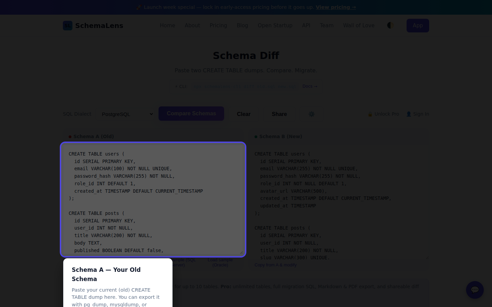

🎬 SchemaLens Video Tips
Free 60-second guides on SQL schema diff, breaking changes, migration review, and safe deployments. Watch, learn, share.

Catch Breaking Schema Changes in 60 Seconds
How SchemaLens detects dangerous migrations before they hit production.

SQL Diff Explained in 60 Seconds
What is schema diff and why every developer needs it.

Review a Migration PR in Under 2 Minutes
How to use SchemaLens in code review workflows.

Find Schema Drift Before It Finds You
Staging vs Production schema comparison.

3 Schema Changes That Look Safe But Aren't
Common dangerous migrations every developer should know.
📥 Download Video Scripts & Assets
All scripts, captions, and generation templates are open source. Use them to create your own SchemaLens content.
Browse Scripts Download Reel GeneratorReady to try SchemaLens?
Paste two schemas. Get a visual diff. Free — no signup required.
Open the App How It Works